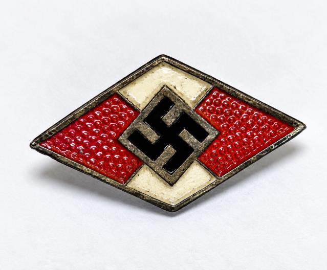

A small object that weighs almost nothing: a Hitler Youth badge taken from a dying German soldier on the night of July 16, 1945.
Born June 19, 1912, the youngest child of Swedish immigrants — a rebel, until an altar call at nineteen changed everything.
A broken heart at Bible college, the “handsomest man on campus,” and a wedding on May 5, 1940 as the world went to war.
Bandages instead of bullets: a blackout accident in New York, two spinal taps, a reassignment that proved a blessing in disguise.
Normandy, the Ninth Air Force, and the road to Aßling.